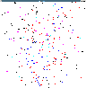
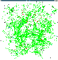
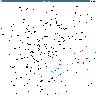
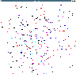

Packets for Position Prediction (3P) is a nodes' location information diffusion algorithm which is designed to be used in an age-based routing protocols. Age-based routing protocols is a class of location services and routing algorithms for mobile ad hoc networks recently introduced in EASE by Grossglauser and Vetterli.
EASE uses age of encounters between nodes to achieve routing packets from a source node to a destination node. Destination's position is increasingly precise as the packets advance toward destination.
When using 3P instead of encounters between nodes, EASE is more efficient and computes shorter routes with less searches at anchor nodes.

We can see in the above picture the routes computed by EASE when using encounters (red) and 3P (blue). The circles are the search scopes at anchor nodes.
Connections between nodes.
  LER 3P Age of the position information of node 1 in each routing table:
- Red: age < 50
- Magenta: age < 100
- Cyan: age < 150
- Black: age > 150
- Blue: prediction
- Yellow: no information
If you have any questions please contact Farid Benbadis or Louis Mandel.
{kind=link}
{kind=link}
{kind=link}